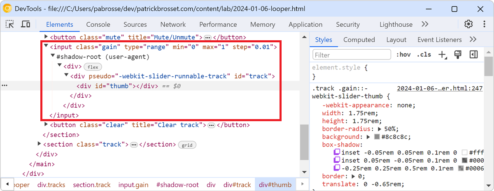

25 Html tips
-
Inspect the user-agent DOM

Browsers often add elements to the DOM of your web pages on top of the ones you, yourself, defined. For example, when you create a <video> element, the browser creates a bunch of nested DOM node... Read more
-
Hide or pin the information tooltip while inspecting page elements
 When selecting elements from the page using the inspect tool, the hovered elements get highlighted, and an information tooltip follows your mouse around and gives you information about the hovered ele... Read more
When selecting elements from the page using the inspect tool, the hovered elements get highlighted, and an information tooltip follows your mouse around and gives you information about the hovered ele... Read more -
Get the recently selected DOM nodes in the console
 If you type $0 in the Console tool, in any browser, the currently selected DOM node is returned. This is very handy. To learn more, check Get the selected element in the console. On top of this, in Ed... Read more
If you type $0 in the Console tool, in any browser, the currently selected DOM node is returned. This is very handy. To learn more, check Get the selected element in the console. On top of this, in Ed... Read more -
Remove annoying page overlays and other elements
 A lot of websites these days get covered with overlays and crammed with lots of ads and other things that make it hard to just read the content of the page. To get rid of an annoying overlay, or any o... Read more
A lot of websites these days get covered with overlays and crammed with lots of ads and other things that make it hard to just read the content of the page. To get rid of an annoying overlay, or any o... Read more -
Jump from a label `for` attribute to the linked input (and more)
 In HTML, it's possible for certain attributes to reference other elements by their IDs. For example, a <label>'s for attribute can be used to link the label to the input it's associated with: &l... Read more
In HTML, it's possible for certain attributes to reference other elements by their IDs. For example, a <label>'s for attribute can be used to link the label to the input it's associated with: &l... Read more -
Quickly spot out-of-viewport elements
 Sometimes, either by accident or on purpose, HTML elements end up outside of the visible browser viewport. When they do, it can be really hard to find them in DevTools. Indeed, the DOM tree in the Ele... Read moreCategories: Supported by:
Sometimes, either by accident or on purpose, HTML elements end up outside of the visible browser viewport. When they do, it can be really hard to find them in DevTools. Indeed, the DOM tree in the Ele... Read moreCategories: Supported by: -
Edit an element's attributes and tag name with the keyboard
 Using the keyboard can be faster than using a mouse in certain cases (and for some people). One such case is editing an element's tag name and attributes in DevTools. To do this, select an element in... Read more
Using the keyboard can be faster than using a mouse in certain cases (and for some people). One such case is editing an element's tag name and attributes in DevTools. To do this, select an element in... Read more -
Start your HTML and CSS prototypes in the browser directly
 Sometimes I need a blank canvas to prototype an idea with HTML and CSS. Something outside of the website I'm working on. Maybe I need a new layout or component and I'm not sure yet how to do it. In th... Read more
Sometimes I need a blank canvas to prototype an idea with HTML and CSS. Something outside of the website I'm working on. Maybe I need a new layout or component and I'm not sure yet how to do it. In th... Read more -
Find HTML parsing errors
 DevTools is so full of features these days that we hardly ever use View-Source anymore. But it turns out that it has one trick up its sleeves that other tools don't, at least in Firefox and Polypane.... Read more
DevTools is so full of features these days that we hardly ever use View-Source anymore. But it turns out that it has one trick up its sleeves that other tools don't, at least in Firefox and Polypane.... Read more -
Select elements with pointer-events:none by holding Shift
 When selecting elements from the page they normally get highlighted on hover and selected on click. However certain elements can't be selected. Indeed, if an element does not react to pointer events b... Read more
When selecting elements from the page they normally get highlighted on hover and selected on click. However certain elements can't be selected. Indeed, if an element does not react to pointer events b... Read more -
Scroll an element into view
 If the inspected web page is long with a lot of elements, and its DOM tree is big and complex, it's easy to get lost, not knowing where the selected element is in the page. DevTools has got your back... Read more
If the inspected web page is long with a lot of elements, and its DOM tree is big and complex, it's easy to get lost, not knowing where the selected element is in the page. DevTools has got your back... Read more -
Take a screenshot of a single node
 In Firefox, Chrome, Polypane and Edge DevTools, you can screenshot a single node from the page. Go to the Elements panel (or Inspector panel in Firefox). Right-click on the node you want to screensho... Read more
In Firefox, Chrome, Polypane and Edge DevTools, you can screenshot a single node from the page. Go to the Elements panel (or Inspector panel in Firefox). Right-click on the node you want to screensho... Read more -
Simulate pseudo CSS classes
 If you use :hover, :active, or other pseudo-classes in your CSS code, it can be tedious to test them. For example, having to hover over an element which is styled with the :hover pseudo-class means th... Read more
If you use :hover, :active, or other pseudo-classes in your CSS code, it can be tedious to test them. For example, having to hover over an element which is styled with the :hover pseudo-class means th... Read more -
See the page in 3D
 See your page in 3 dimensions to quickly find out how deeply nested it is, fix z-index stacking issues, and performance issues. In Edge # Open the Command Menu by pressing ctrl+shift+P (or cmd+shift+... Read more
See your page in 3 dimensions to quickly find out how deeply nested it is, fix z-index stacking issues, and performance issues. In Edge # Open the Command Menu by pressing ctrl+shift+P (or cmd+shift+... Read more -
Evaluate XPath to find elements in the page
 DevTools supports 2 ways to evaluate XPath expressions to help you locate elements in the page. All browsers support those 2 ways: From the Elements (or Inspector) panel: Click anywhere in the panel... Read more
DevTools supports 2 ways to evaluate XPath expressions to help you locate elements in the page. All browsers support those 2 ways: From the Elements (or Inspector) panel: Click anywhere in the panel... Read more -
Store a node as a variable to use it in the console
 If you want to use a DOM node from the page in the console: Right-click the node in the Elements (or Inspector in Firefox). Click on Store as global variable (or Use in Console in Firefox). The Cons... Read more
If you want to use a DOM node from the page in the console: Right-click the node in the Elements (or Inspector in Firefox). Click on Store as global variable (or Use in Console in Firefox). The Cons... Read more -
Prototype content changes with designMode
 When creating or modifying a design prototype for the web, you may want to quickly edit content in the browser without having to find the relevant code. When you turn on designMode for the document or... Read more
When creating or modifying a design prototype for the web, you may want to quickly edit content in the browser without having to find the relevant code. When you turn on designMode for the document or... Read more -
Copy an element's XPath expression
 You can easily copy an element's XPath expression from DevTools. This is useful if you need this expression for an automated test for example. Go to the Elements (or Inspector) panel Use the context-... Read more
You can easily copy an element's XPath expression from DevTools. This is useful if you need this expression for an automated test for example. Go to the Elements (or Inspector) panel Use the context-... Read more -
Drag and drop nodes in the DOM tree
 If you need to move nodes or elements around in the DOM tree, to re-order things in the page, you can do it by drag and dropping nodes around in the Elements (or Inspector) panel.... Read more
If you need to move nodes or elements around in the DOM tree, to re-order things in the page, you can do it by drag and dropping nodes around in the Elements (or Inspector) panel.... Read more -
Find all images without alternative text
 With HTML, you can add alternative text to images using the alt attribute. It can be used to add a text description to images, which is extremely useful for accessibility as some people may not be abl... Read more
With HTML, you can add alternative text to images using the alt attribute. It can be used to add a text description to images, which is extremely useful for accessibility as some people may not be abl... Read more -
Draw a box around all elements to debug your CSS and page structure
 Simple, yet powerful, * { outline: 1px solid red; } is a useful debugging trick that helps understanding the page structure, finding overflow bugs or understand why elements are being pushed away for... Read more
Simple, yet powerful, * { outline: 1px solid red; } is a useful debugging trick that helps understanding the page structure, finding overflow bugs or understand why elements are being pushed away for... Read more -
Find DOM elements from the console
 $ and $$ are 2 functions you can use in the console to find elements in the page. They are essentially shortcuts to the longer document.querySelector() and document.querySelectorAll() functions, but $... Read more
$ and $$ are 2 functions you can use in the console to find elements in the page. They are essentially shortcuts to the longer document.querySelector() and document.querySelectorAll() functions, but $... Read more -
Get the selected element in the console
 If you selected an element in the Elements panel (in Chrome, Safari, Polypane or Edge) or the Inspector panel (in Firefox), you can refer to it in the console using $0. This shortcut will return the D... Read more
If you selected an element in the Elements panel (in Chrome, Safari, Polypane or Edge) or the Inspector panel (in Firefox), you can refer to it in the console using $0. This shortcut will return the D... Read more -
Highlight all the elements that a CSS rule matches
 When you want to know which elements a given CSS rule will apply to, in addition to the currently selected element, you can: In Firefox: In the Style Editor panel: hover over any rule selector for s... Read more
When you want to know which elements a given CSS rule will apply to, in addition to the currently selected element, you can: In Firefox: In the Style Editor panel: hover over any rule selector for s... Read more -
Expand DOM nodes recursively
 You can expand all descendants under a given DOM node in one go, to avoid having to expand each node one by one, which may take a while. In Chrome and Edge Right-click on the node you want to expand... Read more
You can expand all descendants under a given DOM node in one go, to avoid having to expand each node one by one, which may take a while. In Chrome and Edge Right-click on the node you want to expand... Read more
 edge
edge
 chrome
chrome
 firefox
firefox
 safari
safari
 polypane
polypane